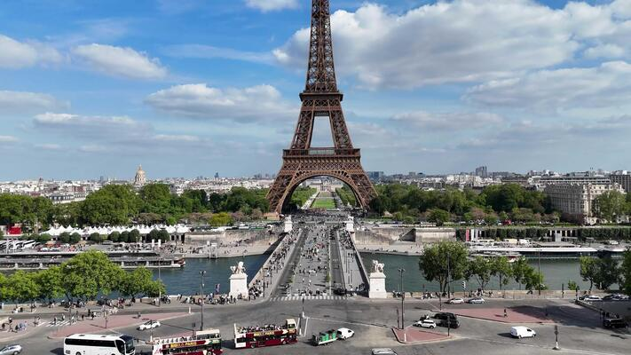
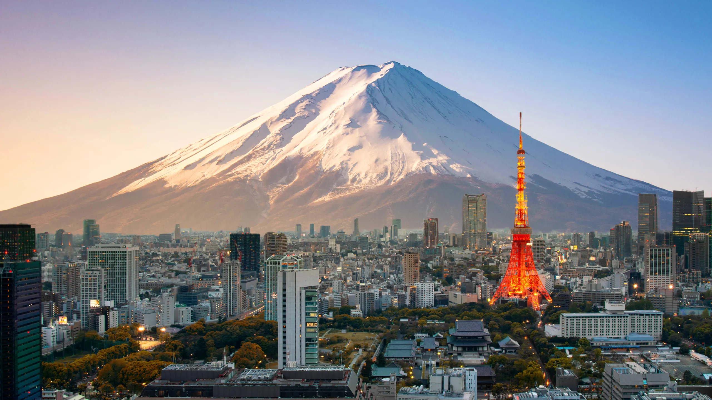
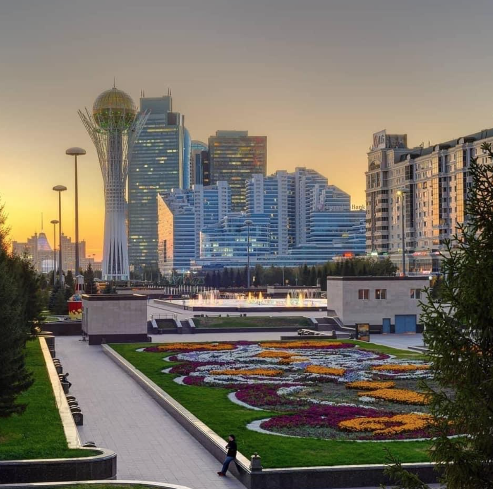
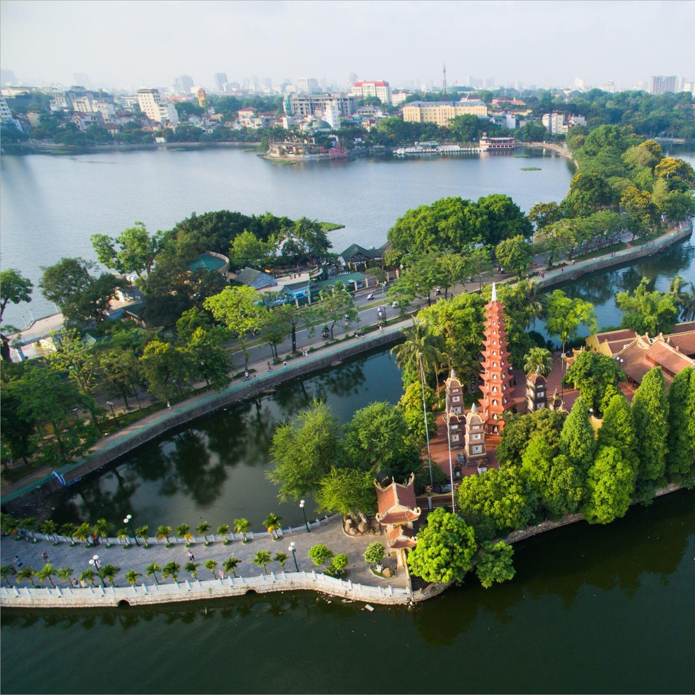
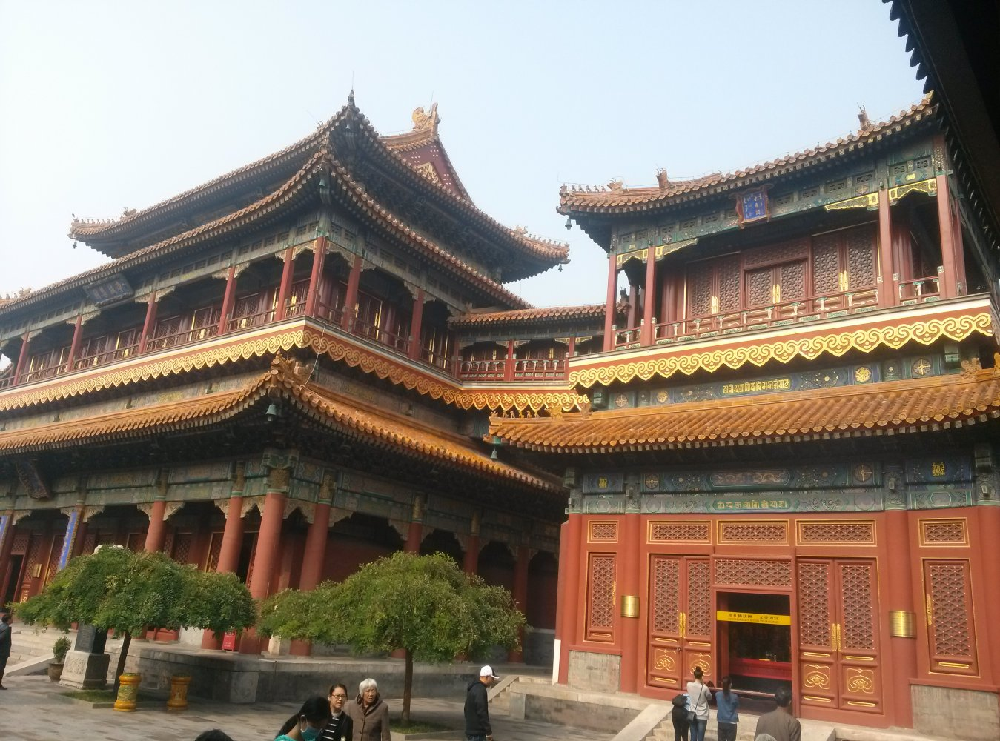
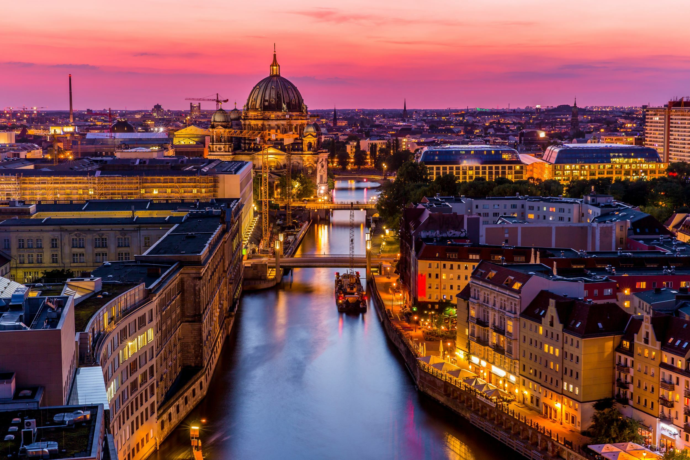

Танымал бағыттар:
Wherever you go, go with all your heart

Париж
Париж – Францияның астанасы ғана емес, сонымен қатар сұлулықтың, өнердің және талғампаздықтың символы.

Токио
Токио – Жапонияның астанасы. Әкімшілік, қаржылық, мәдени һәм өндірістік орталығы. Канто жазығында, Тынық мұжитындағы Токио шығанағының мүйісінде орналасқан.

Астана
Астана (Астана) – Қазақстанның астанасы. Еліміздің солтүстік-орталық бөлігінде, Есіл өзенінің бойында орналасқан.

Ханой
Ханой — Вьетнам елордасы. Саяси, білім, мәдени және ірі өнеркәсіп орталығы. 2008 жылы жер аумағы бойынша әлемдегі 17 ірі қалалар қатарына кірді.

Пекин
Пекин — Қытайның астанасы және елінің әкімшілік орталығы. Қалада дәстүрлі архитектура мен тарихи ескерткіштер сақталған, сонымен қатар заманауи инфрақұрылымды дамытқан.

Нью-Йорк
Нью-Йорк – әлемнің ең танымал және әсерлі қалаларының бірі. Бұл қала өзінің қайталанбас мәдениеті, сәулеті және энергиясымен таңғалдырады.

Берлин
Берлин – Германияның астанасы және ең ірі қаласы. Оның бай тарихы, мәдениеті мен заманауи даму деңгейі оны әлемдегі ең тартымды туристік бағыттардың бірі етеді.